처음 시작하기 — 게임 번역 시작하기
게임 창을 연결하고 로컬 AI로 첫 한국어 자막을 띄웁니다.
1단계 압축을 풀고 실행하기
파일을 한 폴더에 풀고 KO Trans 2의 메인 화면을 엽니다.
- 받은 ZIP을 원하는 폴더에 모두 풉니다.
models,IpaDic,local-worker등 함께 풀린 폴더를 그대로 둡니다. - Windows 10 또는 11의 64비트 PC에서
KoTrans2.exe를 더블클릭합니다. - 설정을 직접 따라가려면 아래 2단계로 이동합니다. 앱에서 안내받으려면 왼쪽 아래의 처음 사용하기를 누릅니다.

완료 확인 메인에 프로필 설정과 번역 시작이 보입니다.
실행이 안 되면 ZIP의 모든 파일이 풀렸는지 먼저 확인하세요. 자세히 보기
2단계 게임 프로필 만들기
게임마다 창·대사 영역·자막 모양을 저장할 프로필을 만듭니다.
- 프로필 설정 → 기본 정보 → 새로 만들기를 누릅니다.
- 프로필 이름을 입력하고 원문 언어에서 영어 또는 일본어를 고릅니다.
- 한두 줄씩 바뀌는 대사는 일반 (대사 중심), 문단이 쌓이는 게임은 노벨 (본문 중심)을 고릅니다.
- 설정 저장을 누릅니다.

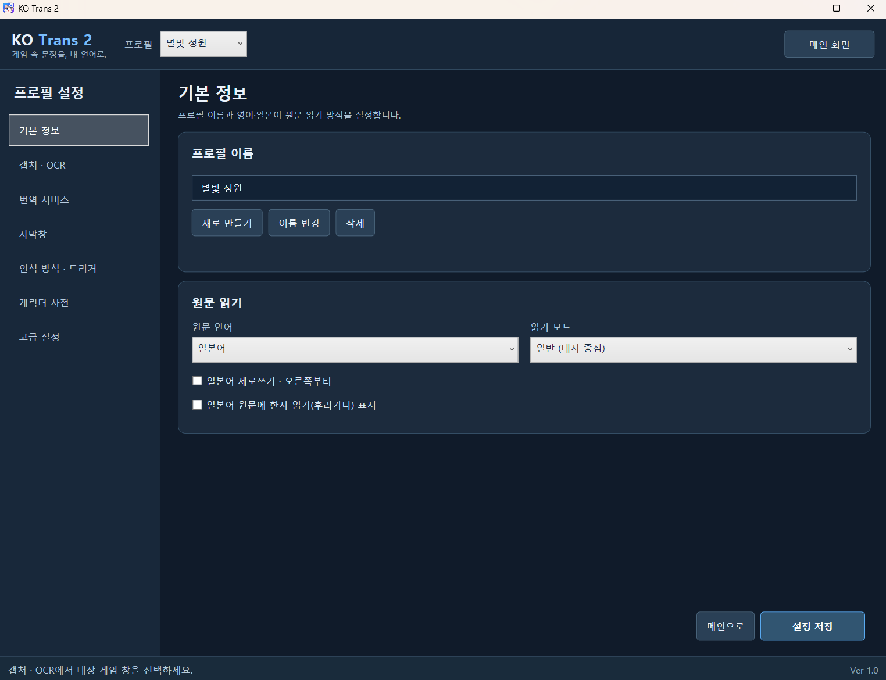
완료 확인 상단 프로필 목록에 새 게임 프로필이 선택되어 있습니다.
기본 프로필도 번역에 사용할 수 있습니다. 자세히 보기
3단계 실행 중인 게임 창 연결하기
KO Trans 2가 읽을 게임 창을 지정합니다.
- 게임을 실행해 창이 보이게 합니다.
- 프로필 설정 → 캡처 · OCR에서 캡처 대상을 게임 창으로 둡니다. 신규 프로필의 기본값입니다.
- 대상 창 선택을 누르고 목록의 게임을 고른 뒤 선택을 누릅니다. 목록에서 게임을 더블클릭해도 됩니다.


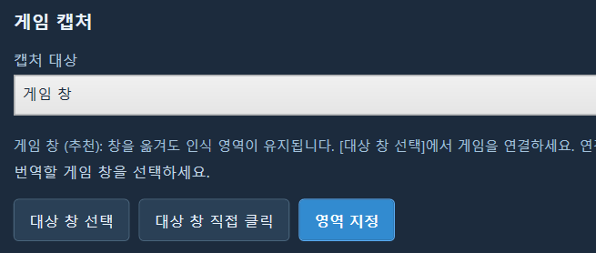

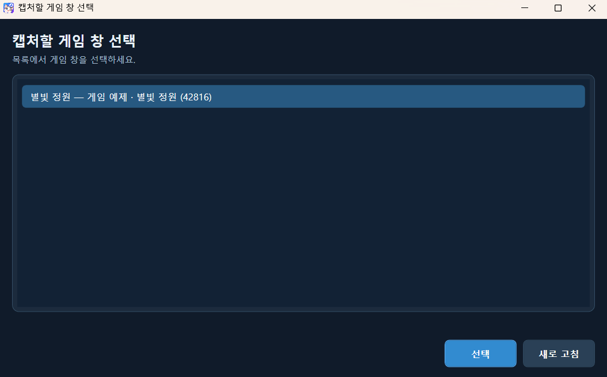

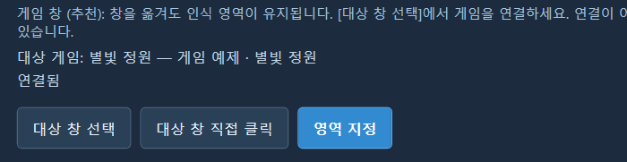
완료 확인 대상 게임 아래에 게임 이름과 연결됨이 표시됩니다. 창을 옮기면 지정한 대사 영역도 따라 움직입니다.
목록에 없으면 대상 창 직접 클릭을 사용하세요. 독점 전체화면이면 창 모드나 화면 영역도 시도할 수 있습니다. 자세히 보기
4단계 대사 영역 지정하기
게임 화면에서 읽을 대사 부분을 고릅니다.
- 게임을 전면에 두고 대사가 나온 상태에서 영역 지정을 엽니다.
- 대사 전체와 다음 줄이 나타날 여유 공간을 포함해 드래그합니다. 메뉴나 장식 글자는 가능한 한 제외합니다.
- 사각형 내부를 끌어 이동하거나 가장자리를 끌어 크기를 조절한 뒤 확정을 누릅니다.

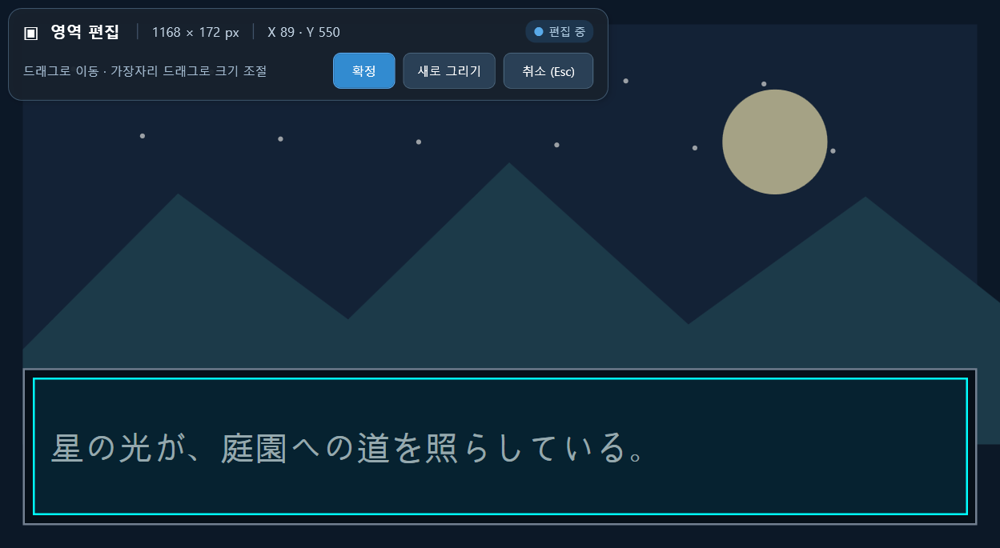

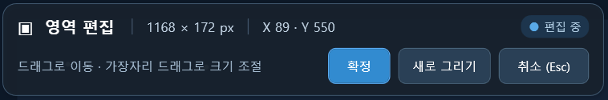
완료 확인 캡처 영역에 게임 창 내부 기준의 위치와 크기가 표시됩니다.
마법사의 게임 창 전체를 인식 영역으로 사용으로 전체 창을 고를 수도 있습니다. 자세히 보기
5단계 로컬 AI 모델 준비하기
API 키 없이 한국어 자막을 만들 번역 모델을 준비합니다.
- 번역 서비스 → 번역 제공자에서 로컬 AI 번역을 선택합니다.
- 로컬 AI 모델에서 표준 Hy-MT2 7B(약 4.6GB)를 고릅니다. 여유 메모리나 저장 공간이 부족하면 경량 1.8B(약 1.1GB)를 고를 수 있습니다.
- 설정 저장을 누른 뒤 모델 관리에서 설치를 누릅니다. 번역 시작 시 설치 안내가 뜨면 거기서도 진행할 수 있습니다.
- 다운로드 안내를 확인하고 설치와 준비가 끝날 때까지 기다립니다.

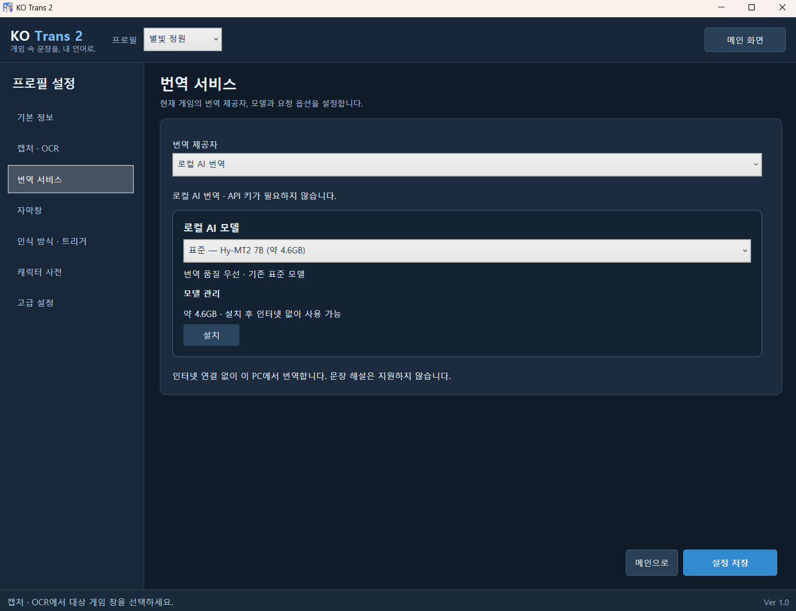

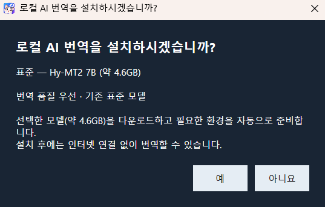

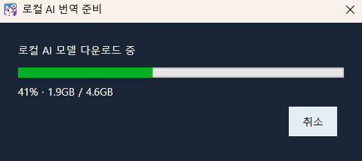
완료 확인 선택한 모델의 상태가 설치됨으로 바뀝니다. 최초 다운로드 후 로컬 번역은 인터넷 없이 사용할 수 있습니다.
최초 설치에는 인터넷 연결과 모델 파일을 저장할 여유 공간이 필요합니다. 자세히 보기
6단계 한국어 자막 확인하기
게임 위 자막창에서 번역 결과가 갱신되는지 확인합니다.
- 메인으로를 누르고 번역 시작을 누릅니다. 기본 단축키는 Shift+F1입니다.
- 게임 창을 전면에 놓고 다음 대사를 표시합니다. 입력 트리거 모드라면 지정한 입력을 누릅니다.
- 한국어가 보이면 왼쪽 위 손잡이로 자막을 옮기거나 자막창 가장자리를 끌어 크기를 조절합니다.

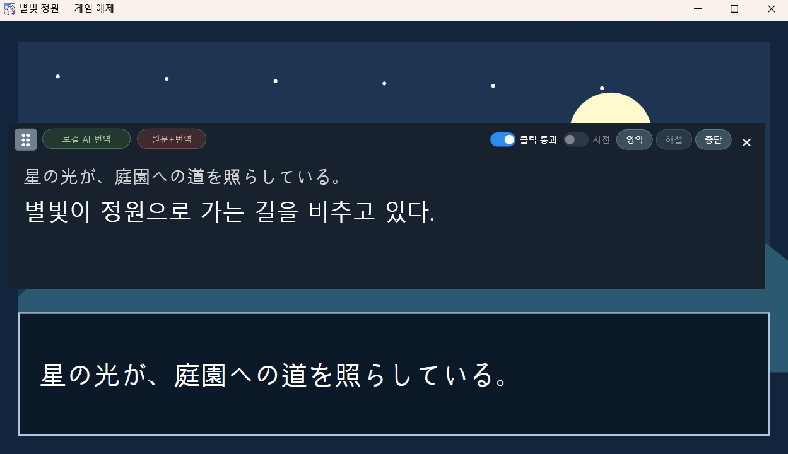

완료 확인 첫 번역 성공! 대사 아래 또는 게임 위 자막창에 한국어 번역이 표시됩니다.
원문만 보이면 자막창 → 한국어 번역 표시를 확인하세요. 자세히 보기
7단계 메인 다시 열기와 종료하기
번역을 멈추고 메인을 다시 열거나 앱을 완전히 종료합니다.
- F1을 누르거나 알림 영역의 KO Trans 2 아이콘을 우클릭하고 열기를 선택합니다.
- 메인 창의 ×는 앱을 알림 영역으로 숨깁니다.
- 완전히 끝내려면 알림 영역 아이콘을 우클릭하고 종료를 선택합니다.

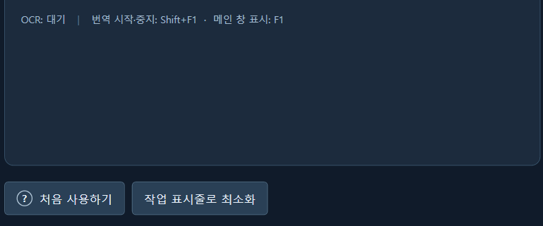
완료 확인 완전히 종료되면 알림 영역에서 KO Trans 2 아이콘이 사라집니다.
아이콘이 보이지 않으면 작업 표시줄의 숨겨진 알림 아이콘을 펼칩니다. 자세히 보기